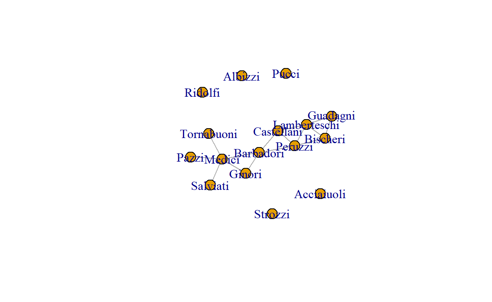
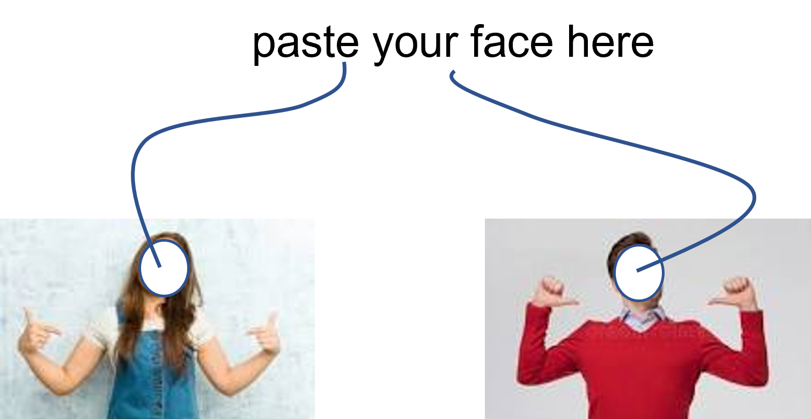

Introduction
In the previous tutorial, you learned the basics of using R. That tutorial was meant to introduce you to R as a programming language. It is very useful to know how to use R–not just for network analysis– because it offers an extremely powerful programming experience.
Now, it is time to start pointing your freshly developed R power at the analysis of networks. No worries, we will start gently and will slowly become quite advanced as this course advances.
The purpose of this tutorial is:
- introduce you to the ecosystem of packages in R that are meant to do network analysis (and outside of R too);
- to be you able at working with the two types of network objects that will be the core of this course (and of much of social networks analysis projects by researchers worldwide);
- to introduce you to out awesome course CHEATSHEET that will prove to be of tremendous help to you in this course (and in your later SNA projects).
Let’s get to it!
Checking installation
First, let’s make sure you have all of the required packages installed.
R Version
You need to have installed R version 4.2.0 and this tutorial is going
to check it for you. Please hit the Run Code button.
check_R()R Studio Version
You need to have installed RStudio version 2022.02.3+492 or above.
Let’s check by clicking Run Code:
check_RStudio()Packages
You need to have a few packages installed. Click the
Run Code to check. It will check whether you have the
required packages installed and will attempt to install any missing
packages in case there are any (or it will advise you to upgrade
sna4tutti).
check_pkgs()What is a network?
Run this code and see what happens (you’ll learn about what the code does exactly later in the course):
data(florentine, package = "snafun")
flobus <- florentine$flobusiness
igraph::plot.igraph(flobus)This is a network of 16 families who do business with each other. There are 15 business relations between them.
In order to make sure we all speak the same language in this course. Here are a few quick definitions.
A network == a graph == a collection of vertices with the edges that connect them.
Yeah yeah, that still sounds like gibberish. What are vertices and edges?
Vertex = a node / an actor = a dot in the network plot. In this network, there are sixteen families that the network is about. So, there are 16 vertices. We will use the term vertex/node/actor interchangeably in this course.
Edge = a tie / a connection / a relation(ship). Here, there are 15 pairs of families who do business with each other. So, there are 15 edges. We will use the terms edge/connection/relation/tie interchangeably.
So, a network is simply a set of actors and the relations between them.
Done.
Using R for Social Network Analysis
Let’s start with the good news: the language is BY FAR the most powerful and extensive environment for network analysis. And when I say BY FAR, I really mean BY FAR. Sure, there are other languages that have capablity for network analysis, some even have pretty decent packages. And there are many dedicated software programs for SNA, many commercial with great looking user interfaces. But they still don’t get even close to how powerful the ecosystem of is for network analysis.
By immersing yourself in , you will become well-versed in the best tool for the job. No, let me rephrase that: BY FAR the best tool for the job!
(Photo by Greg Rosenke on Unsplash)
SNA outside of
Network analysis is hip. And very useful, for example for organizations. That is why there are so many software programs and tools for SNA in the world. Most languages have some facility for network analysis. Even Excel… Yep, complete with a fancy website. Why anyone would want to perform SNA in an environment like Excel is beyond me, but people do it. Mainly in businesses.
Then there are the “serious” languages/programming environments like
Matlab, Mathematica, or Python. These also have tools for network
analysis. In Python, the main libraries are igraph
and NetworkX. The igraph library
is actually a variation of the igraph package that we will
be using in this course. The NetworkX library is written in pure Python,
so it is a bit slow. It is a decent package, but too limited for the
purpose of our course. That said, once you have mastered the
fundamentals of SNA in our course (esp. what we discuss in the first
couple of weeks in the course) you can do some decent descriptive
analysis in NetworkX or Python igraph too.
Then, there are many standalone softwares for SNA. Think of Pajek/PajekXXl/Pajex3XL, Gephi, Cytoscape, GraphStream, NetMiner, or (for historical reasons) Visone. There are dozens more. These are all free.
And then there are dozens more that are commercial.
If you wanted, you could analyze your social network data in a different language/package/library/software/tool every day if the year without going to the same one twice.
SNA using
You can do a lot with the tools mentioned above, but no single environment is as powerful in network analysis as R. Especially when it comes to statistical analysis of social networks, R is absolutely unparalleled. This is because the academic community who are advancing the field of statistical analysis of social networks program their tools in R and make those available to the rest of world that way. This actually goes beyond social networks, there is also a huge community in the natural sciences doing analysis (e.g. of biological networks), making their tools available through R for the rest of us.
This leads us to some good news and some bad news.
In you can do virtually any analysis you want to perform on networked data. Especially when it comes to modeling networks, is virtually unparalleled. Sure, you can do some of the stuff in other programs too, but lots of modeling methods have been implemented in only. The wonderful thing is that you can run an entire network analysis pipeline inside alone.
The fact that is so incredibly powerful is due to tens of thousands of researchers implementing their models and techniques into packages. The result is that the capability of doing network analysis in is scattered across hundreds of dedicated packages. These packages were developed by many different researchers and many different research groups and often work (slightly/very) different from other network analysis packages inside . This means that a network analysis pipeline often requires an analyst to use multiple packages that each require specific input data structures and spit out specific output data structures. This is not consistent. The result is that you will need to convert your input and output objects multiple times during a network analysis pipeline to perform the full analysis you wanted using the various packages. Note that function naming is also often not consistent between packages. Or argument naming. So, beware, and always consult the help pages of a package you haven’t worked with before (or in a while).
This, in fact, is a challenge across the ecosystem, it is not specific to network analysis in . It (partly) derives from the adage that many users live by: create packages that do a single group of things really well, rather than creating large packages that try to do it all (and then possibly not all as well).
Although there are many packages that each specialize in a specific analysis method, there are two packages that have set a standard that many other packages can work with.
The first is igraph. The
igraph package actually has implementations in C/C++,
Python, Mathematica, and R. Although the igraph functions
are slightly different between these environments, you will benefit from
the code in this course if you want to use igraph in
another environment at a later time.
The general igraph page is here and the extended documentation for
the R version is here.
The igraph package is very capable for descriptive and
mathematical analysis of network data. The package works with objects of
class igraph (you already learnt that
is an object-oriented functional language, which means that
everything in
is an object–even functions). This type of object can also be used by
other packages, such as tidygraph or migraph. We will make considerable use
of the igraph infrastructure throughout this course,
especially in the first weeks.
The second is the (creatively named) network
package. This package implements a class of network
objects that can be analyzed by packages such as the sna package you already used in this
tutorial.
Actually, sna and network are part of the
statnet suite
of packages, that all work together). We will make use of this set of
packages a lot in this course (especially in the second part of the
course). Actually, the packages inside the statnet suite are
mutually somewhat inconsistent in that they sometimes require objects of
class network as input and at other times expect a
matrix instead (even within the same package, such as the
sna package).
So, where is that somewhat better news you promised me?
Well, with these types of data structure, you can do most of the analyses you will encounter in this course and that you will need in most network analysis projects.
So, although you will still need to convert your network data between these three structures (network, matrix, and igraph), in most projects you will not have to deal with other data structures as well.
OK, so you learnt that there are three data structures that you will
need to convert between and that you will have to switch between several
packages (esp. network/sna and
igraph) as part of the analysis of network data. That’s a
bit painful and annoying and distracts from focusing on the fun of
network analysis itself.
Claudia and Roger to the rescue!
We have created a package called snafun especially for
you, for use in this course and beyond. The package works seamlessly
with objects of class network and igraph . It
will convert between these classes (and several others as well) and even
offers you the ability to run analyses without bothering about which of
these data types you are using. It simply works. So, if you run
snafun::betweenness(x), this will work regardless of
whether ˋx` has class network or igraph . The
package also enables you to run an analysis that is only available in
one of these packages while using the object of the other class. It
still simply works. And it works simply, too ;-)
Of course, we have not implemented every possible tool and method for
you, but you will be able to do most of the things from the first part
of the course in snafun mostly. And then, when we get to
modeling networks using Exponential Random Graph Models (part II of the
course), you simply use `snafun` to convert your data to the
network data structure and off you go.
You could say that snafun enhances the fun of
sna.
What an amazingly appropriate name for a package!
The snafun API
We have tried to use a consistent API for the snafun
package. The package is very recent (we developed it over the last few
months), so there may be some space for further development and
extension. But this is the general idea behind the API. This is what it
looks like:
- add_* : add stuff to network objects
- count_* : counting things in the graph, such as the number of vertices, number of edges, dyad census, triad census
- create_* : create graphs (in igraph or network format) with specific characteristics
- extract_* : access specific data from (network) objects
- find_* : identify specific parts of the network, such as who the isolates are
- is_* : checks, such as whether a network is bipartite
- has_* : checks, such as whether a network has loops
- list_*: list characteristics, such as list_edge_attributes
- make_* : create objects based on graphs, ie. make a matrix from vertex attributes, make a mixing_matrix, etc.
- plot_* : several plot functions
- remove_* : delete parts of the network, such as remove the isolates
- stat_* : help functions for statistical modeling
- to_* : conversion methods, converting from igraph, network, matrix, data.frame to igraph, network, matrix, data.frame
Then, there are indices/measures at three levels: - e_* : edge level indices - g_* : graph level indices, such as betweenness centralization - v_* : vertex level indices, such as betweenness
Finally, it is inevitable to have a few some functions that don’t fit within a clear category and don’t follow this API.
Anyway, try to remember the API above, so you can easily find the functions you need. And, most of all: ENJOY!!!

Exploring network data
Let’s explore what network data look like and how you figure out what’s inside a data object. We start by loading data from the ` package. Loading data from a package always works the same way in R. This is what you do:
data(emon, package = "network")If you want to learn more about this dataset, type ?emon
after loading it and check the help page that pops up. You will then see
that emon is a list that contains seven networks. Let’s
look at the first one, called “Cheyenne”. You still remember from the R
tutorial how to access that one, right?
data(emon, package = "network")
cheyenne <- emon$CheyenneLet’s look at the data object
print(cheyenne)This is what an object of class network looks like. This
is a network with 14 vertices that are connected by a total of 83
edges.
You also see that the edges are directed (that is: they have a sender and a receiver), there are ni loops (a loop is an edge from an actor to himself). You also see that there are several attributes in the data about the vertices, such as their Location, their Paid.Staff and their names (vertex.names). We also have an attribute Frequency for the edges. Again, the help file gives info on what these attrbutes mean.
You can also look at a summary of the data:
summary(cheyenne)This is what a network object looks like. Let’s look at
the same data in a igraph format. How? USE THAT AWESOME
PACKAGE YOU LEARNED ABOUT ABOVE!
cheyenne_i <- snafun::to_igraph(cheyenne)
print(cheyenne_i)That looks different! On the first line you see “14 83” which means:
14 vertices with 83 edges. You also see the capital D saying: this is a
“directed” network. You also see the attributes that we just saw above.
The presentation of the network data is different because an
igraph object is very different from a network
object.
Gimme some numbers
It would be silly to have to print the object if you want to know its characteristics, so you use functions for this. Here’s a bunch:
snafun::count_vertices(cheyenne)
snafun::count_edges(cheyenne)
snafun::is_directed(cheyenne)
snafun::is_network(cheyenne)
snafun::is_igraph(cheyenne)
snafun::has_loops(cheyenne)
snafun::list_edge_attributes(cheyenne)
snafun::list_vertex_attributes(cheyenne)That’s simple and fun!
Now, here is a little challenge.: - read in the network called
“Texas”, that is inside the emon data - apply the functions
from above on the Texas network instead of on Cheyenne - convert the
Texas network to an igraph object, call that
texas_i for now. - determine all of these numbers for
Texas_i. - Check if you get the same results (you
should)
texas <- emon$Texassnafun::count_vertices(texas)
snafun::count_edges(texas)
snafun::is_directed(texas)texas_i <- snafun::to_igraph(texas)snafun::is_network(texas_i)
snafun::is_igraph(texas_i)
snafun::has_loops(texas_i)
snafun::list_edge_attributes(texas_i)
snafun::list_vertex_attributes(texas_i)texas <- emon$Texas
snafun::count_vertices(texas)
snafun::count_edges(texas)
snafun::is_directed(texas)
snafun::is_network(texas)
snafun::is_igraph(texas)
snafun::has_loops(texas)
snafun::list_edge_attributes(texas)
snafun::list_vertex_attributes(texas)
texas_i <- snafun::to_igraph(texas)
snafun::count_vertices(texas_i)
snafun::count_edges(texas_i)
snafun::is_directed(texas_i)
snafun::is_network(texas_i)
snafun::is_igraph(texas_i)
snafun::has_loops(texas_i)
snafun::list_edge_attributes(texas_i)
snafun::list_vertex_attributes(texas_i)By now, you should be getting a good idea of how you can get a feel for the network data you are working with.
Did you notice that the
snafunfunctions are exactly the same, regardless of whether you feed it anigraphobject or anetworkobject? That’s the power ofsnafun: it just understands what to do. BRILLIANT!
(isn’t it wonderful that we remain so humble and modest about it?)
Gimme more data from the object!
Let’s extract some of the attributes from the network objects. This is the format:
# get the vertex attribute that is called "Formalization"
snafun::extract_vertex_attribute(texas, "Formalization")
# there is only 1 edge attribute, get it
snafun::extract_edge_attribute(texas, "Frequency")Try it out. Extract some attributes from the texas_i
graph (so, the igraph object). Get hold of at least two
vertex attributes and get the edge attribute. Feel free to ask for an
attribute that doesn’t occur in the graph object and check out what
snafun returns in this case.
snafun::extract_vertex_attribute(texas_i, "Volunteer.Staff")snafun::extract_edge_attribute(texas_i, "Frequency")snafun::extract_vertex_attribute(texas_i, "Volunteer.Staff")
snafun::extract_vertex_attribute(texas_i, "Command.Rank.Score")
snafun::extract_edge_attribute(texas_i, "Frequency")
snafun::extract_edge_attribute(texas_i, "Frequency2") # does not existThe igraph and network objects give
different names to the vertex attribute that contains the names of the
actors. Look at the help for the snafun::extract function
and then find out how you can access the names of the actors in the
texas and texas_i graph objects.
# look at the help for the `extract` function
?snafun::extract# which vertex attributes are there in texas?
snafun::list_vertex_attributes(texas)
# get the vertex names in two ways
snafun::extract_vertex_attribute(texas, "vertex.names")
snafun::extract_vertex_names(texas)# the attribute with the vertex names has a different name in `texas_i`
snafun::list_vertex_attributes(texas_i)# note that igraph and network name the vertex name attribute differently
# but the snafun::extract_vertex_names function takes care of this automatically
snafun::extract_vertex_attribute(texas, "vertex.names")
snafun::extract_vertex_attribute(texas_i, "name")
snafun::extract_vertex_names(texas)
snafun::extract_vertex_names(texas_i)Later, we will make extensive use of a very handy function that extracts all of the vertex attributes at once and puts all of them together in a data.frame.
Try it out (feel free to try it for both texas and
texas_i–the output is ordered slightly differently, but the
data are the same):
snafun::extract_all_vertex_attributes(texas)Basic network representations
We have now seen that there are multiple graph objects in R and that
we will focus mainly on igraph and network
objects.
But there are also other ways to represent a network. These representations are canonical and independent of the R environment. These are representations you will encounter a lot in network analysis. Let’s discuss the three main ones.
We’ll do this with the network we already saw: the
flobus network. Recall that this is what it looks like:

Adjacency matrix
An adjacency matrix is a matrix in which the rows and columns represent different nodes. In an unweighted adjacency matrix, the edges (i.e., lines) are 0 or 1, indicating whether these two nodes are connected. If two nodes are connected, they are said to be adjacent (hence the name, adjacency matrix). In a weighted matrix, however, the cells can have different values, indicating different edge qualities (or tie strengths).
For this network, the adjacency matrix looks as follows
snafun::to_matrix(flobus)[Did you notice the function we used here?]
When the network is undirected and unweighted, the corresponding adjacency matrix is symmetrical and binary, as is the case here.
Edge List
A very common data structure is the edge list. An edge list is a two-column matrix, with the sender in the first column and the receiver in the second (ie. the edge goes from the vertex in the first column to the vertex in the second column). In an undirected network, the order of the vertices don’t matter. For weighted networks, you may have a third column that indicates the edge weight.
snafun::to_edgelist(flobus)Compare with the graph to understand the exact structure of the edge list.
In case there would be edge attributes, these would go as additional columns in this data.frame. Here, there are none.
Adjacency List
An adjacency list (or node list, is a list that presents the ‘focal’ node and then all the other nodes that are connected to it (i.e., that are “adjacent” to it). This looks as follows:
igraph::as_adj_list(flobus)Compare this with the results above, can you see how this works?
[There is no implementation for this in snafun yet. But
if you really want to have it, ask Claudia and Roger and it might just
magically be added to the package!]
Bipartite networks
We defined a network as a collection of actors and the ties between them. In many networks, ties can potentially happen between any two actors.
Not so in bipartite networks.
A bipartite network (also called a bimodal network or a two-mode network) is a network with two types of nodes, where edges run only between nodes of different types.
Recommender systems are prominent examples of bipartite networks, where people are connected to books or music or movies or so and the edges measure “liking” or “purchasing.” But books don’t purchase other books and customers don’t purchase other customers. So, edges run between customers and books, but not between books and not between customers. So, the ties only occur between nodes of different types, but not between nodes of the same type.
Or consider a network of researchers and the academic papers they write. Or students and the classes they take. Or movie stars and the movies they play in. Or directors and the boards of directors they are a member of. Keywords and the pages they appear in. Trains and the stations they visit. Metabolites and the biological reaction they participate in.
You get the idea.
They are actually quite common.
You learnt about the adjacency matrix for a unimodal network. The equivalent of the adjacency matrix for an (undirected unweighted) bipartite network is a rectangular matrix called the incidence matrix. If n is the number of items or people in the network and g is the number of groups/movies/books/train stations, then the incidence matrix B is the g × n matrix where cell (i, j) is 1 if item j belongs to group i, and 0 otherwise.
Let’s try it out.
Load the judge_net_bp network from the
SNA4DSData package. This is a network of judges and the
cases they worked on.
First, get the dataset from the SNA4DSData package and
then print it.
data(judge_net_bp, package = "SNA4DSData")
judges <- judge_net_bp
print(judges)You recognize the structure of an igraph object. Look at
it carefully. and try to answer this quiz question:
We wanted to see the incidence matrix. The problem is, there are 1189
vertices in the network (you noted that from the igraph
output, right?), so it will be quite large. Still, let’s be brave and
just go for it. If smoke comes out of our laptops, we’ll just buy a new
one later.
You get the incidence matrix for a bipartite network using
snafun::to_matrix. Do that now.
cat('Create the incidence matrix for "judges" and call it "im". Then print it.')im <- snafun::to_matrix(judges)
imOK, that’s clearly too big for our screens. Let’s look at it a bit further. As you will recall, an adjacency matrix is square: there are as many potential senders as receivers, so there are as many rows as columns. That makes a matrix square.
We will call the incidence matrix im for short. Is
im square? Let’s look at the dimension of
im.
dim(im)The first number represent the number of rows that im
has the second number the number of columns. Well, is it square? Why
does it have a lot more rows than columns? In fact: what is in the rows
and what is in the columns?
I think you have figured it out.
One final note. Why did snafun::to_matrix create an
incidence matrix (ie. a matrix with vertices of one type as senders and
vertices of another type as receivers), while it gave us an adjacency
matrix before? The answer is:
because snafun is smart
It understands how igraph objects work. Fun!
Doing your first analysis
OK, you now know
- how to check out what is in a graph object
- how to use functions to find the number of vertices, the number of edges
- how to use functions to extract attributes of vertices, edges, and graphs
- how to convert between
igraphandnetworkdata and adjacency matrices, incidence matrices, edge lists, and adjacency lists. - you used your first functions from the
snafunpackage
That’s already a lot! You can be proud of yourself!

We’ll now explore one of the graphs from this tutorial a biut further.
Making names simpler
Let’s continue our work with the texas data. The vertex names are
quite long, which is going to make our output crowded. So, let’s
simplify the names of the vertices. I will put the new names in a vector
called new_names, so you can see which is which.
old_names <- snafun::extract_vertex_names(texas)
new_names <- c("USArmy", "DisES", "HwPtl", "NatGrd", "Parks", "HwDpt",
"Rngr", "RdCrs", "EMS", "SlvArm", "KnCCD", "KnCSO", "CoVFD",
"KrCSO", "KrCCD", "CeVFD", "ISVFD", "KSVFD", "KFD", "KPD",
"RctK", "BCSO", "BCCD", "BVFD", "PCVFD")
cbind(old_names, new_names)You set the vertex names using your favorite R package. The format is:
snafun::add_vertex_attributes(x = name_of_the_graph,
attr_name = name_of_the_attribute,
value = value_to_be_used)Like so:
texas2 <- snafun::add_vertex_attributes(x = texas, attr_name = "vertex.names", value = new_names)Although it says add_vertex_attribute, you can also use
this function to set an existing attribute to some value. Check it out
and extract the vertex names from texas2.
snafun::extract_vertex_names(texas2)Wonderful, you are getting the hang of it!
Distance
Hopefully, you checked out the help for emon earlier in
this tutorial. There, you learned that the networks inside
emon reflect inter-organizational networks of interaction
during search and rescue (SAR) activities. We are looking at data from
Texas: which organization works with which organization when it comes to
search and rescue. The data are directed, so organization A may seek out
organization B to collaborate, but B may not seek out A.
Do note that this is a well-known data set from 1981, so it may not reflect how search and rescue is conducted today.
Let’s make a quick plot. It is going to be ugly, but no worries: you’ll learn how to make nice plots in a few weeks.
plot(texas2)Let’s say you want to know how many steps it takes from one
organization to another. This is called the distance between to
vertices and you get it using the snafun::d_distance()
function. Check the help for this function and then apply it to
texas2, with mode = "out", so you take the
direction of the relationships into account.
# to get the help page: `?snafun::d_distance`
snafun::d_distance(texas2, mode = "out")You see that it takes 3 steps to get from the US Army to Kerr County Civil Defense (“KrCCD”). If you look at the adjacency matrix (or the edge list) (or the adjacency list), you would see that USArmy -> Texas Highway Patrol -> Kerrville Police Department -> Kerr County Civil Defense. That’s three steps.
(there are alternatives, you can “Kerrville Police Department” replace with “Comfort Volunteer Fire Department” or “Red Cross” or “Texas National Guard”, but it will never be less than three steps).
You also see that the distance from the Salvation Army to all others is infinitely large. Whhy? Because there is not a single tie from the Salvation Army to any other organization. There are some ties to the Salvation Army, so they are not completely alone in the end.
Density
Since there are 25 organizations, there could be 25 * 24 = 600
directed ties in this network (why? try your math skills on this). But
there are only 186 ties. Because 186/600 = .31, this means that just
under one third of all collaborative ties in this SAR network are
present. You could have determined this without doing the math by hand.
See if you can calculate this number using the
snafun::g_density function. Check out the help and apply it
(we don’t want to consider loops).
# to get the help page: `?snafun::g_density`
snafun::g_density(texas2)Superb job.
Indeed, this measure is called density and you’ll determine this for every graph you will encounter from now on.
Who is in my neighborhood?
The US Army is an important player in any large scale search and
rescue endeavor. We can quickly see whom they are working with, using
the snafun::extract_neighbors function. Check out the help
and then figure out which other organizations receive an edge from the
US Army in the Texas network. Also, check out from whom the US Army
receives an edge in texas2.
# to get the help page: `?snafun::extract_neighbors`
#
# who receive an edge from the US Army?
snafun::extract_neighbors(texas2, vertex = "USArmy", type = "out")
# who send an edge to the US Army?
snafun::extract_neighbors(texas2, vertex = "USArmy", type = "in")What do you conclude: are the US Army popular collaboration partners or do they have to squeeze themselves in to get some collaboration going?
Let’s summarize
As you learned in the bootcamp, you should always thoroughly inspect your data before you do any fancy analysis on it. The type of stuff you have done so far is part of that.
By now, you are probably not surprised to learn that
snafun once again has an exquisitely helpful function to
provide you with omse of the basic measures in a single go. It is
called, believe it or not: snafun::g_summary (because it
provides a summary at the graph level). Fun and easy.
Wouldn’t it be wonderful if doing taxes would be as smooth?
Try out snafun::g_summary on texas2 and see
if you recognize some of the output.
# to get the help page: `?snafun::g_summary`
snafun::g_summary(texas2)Many of the measures will be new to you, but you’ll learn them next week. What you do know is that dealing with graph objects in is easy peasy. That way, you can focus on extracting awesome insights from networked data.
Exciting!
It’s a wrap!
There you go. You learnt about the various graph objects in and the various representations of network structures. You manipulated graph objects (accessing attributes, setting attributes, figuring out the vertices and the edges), you dabbled with bipartite networks and even computed some measures on the networks and the dyads.
This is only the necessary foundation, so that we can start doing some actual analyses of social networks. You need to have mastered the foundations of how to deal with this type of data before you can start doing cool stuff with them.
| Foundation! | Foundation! |
|---|---|
 |
You are now ready to try some of this stuff on your own. Please do the homeplay (see Canvas), which will be the foundation for the upcoming lab.
It’s going to go faster from here and we’ll be more adventurous in every future tutorial and lab and you now have the skills to travel along.
ENJOY the ride!